Estructura Electrónica: Bandas y DOS - LiF
Li
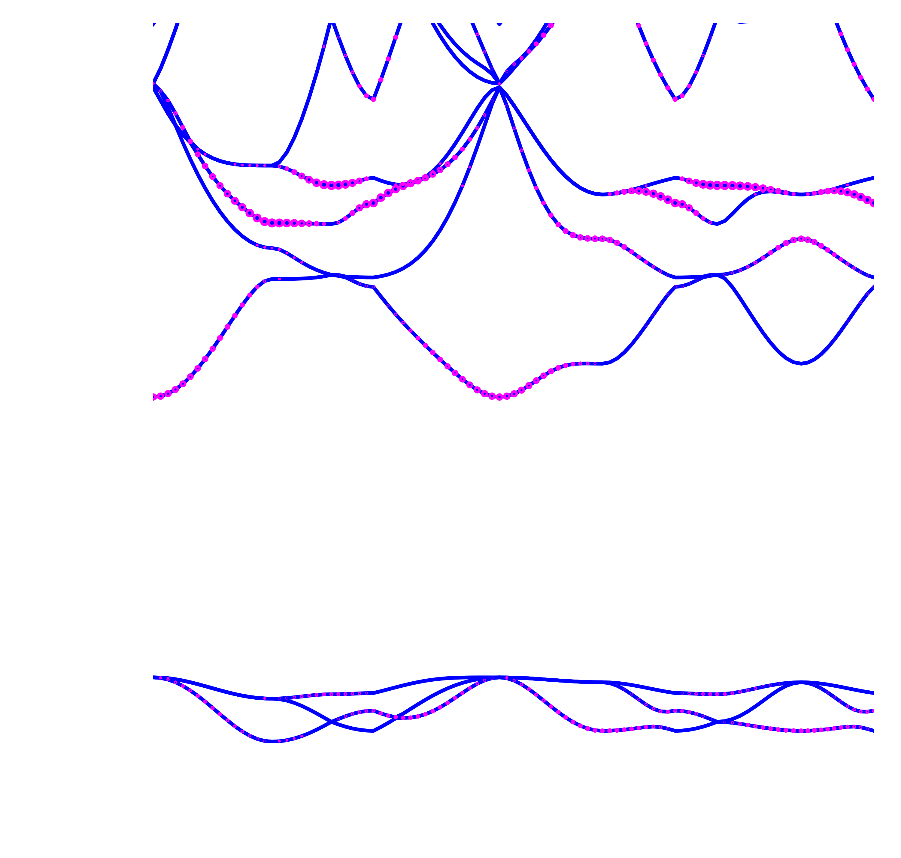  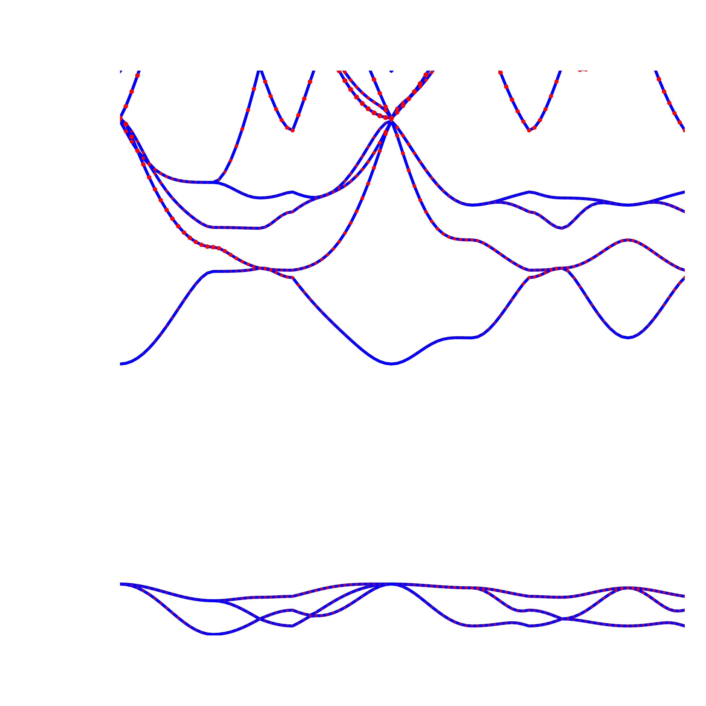
F
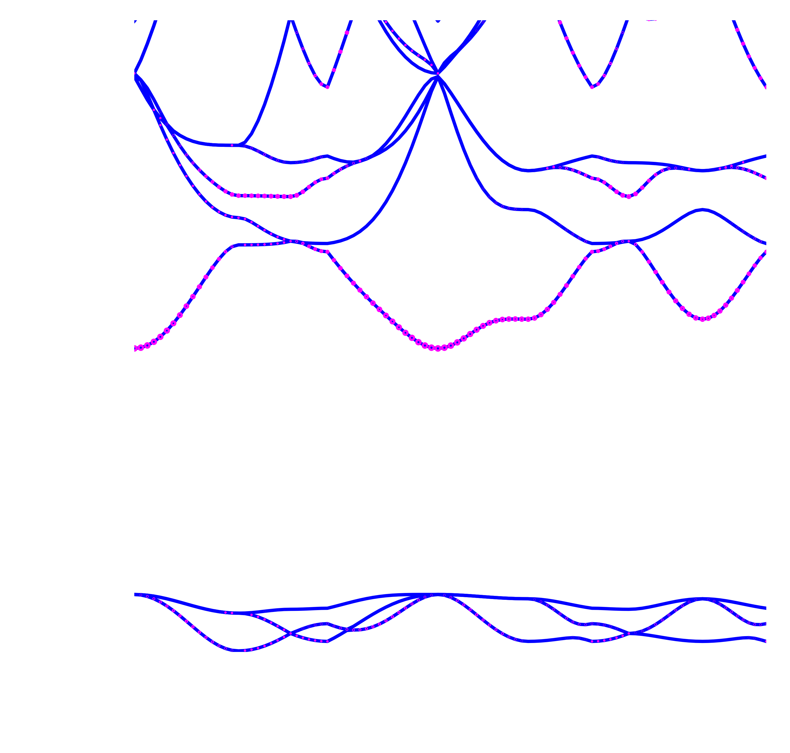 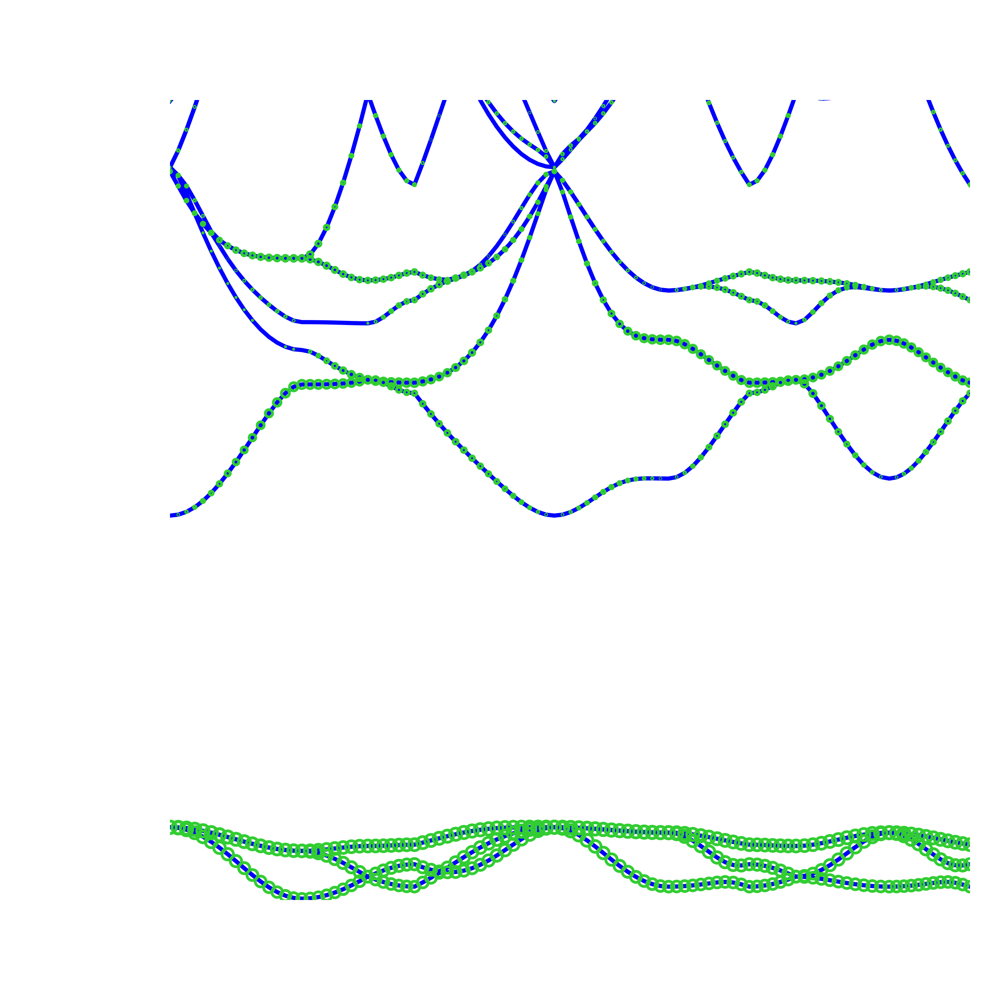 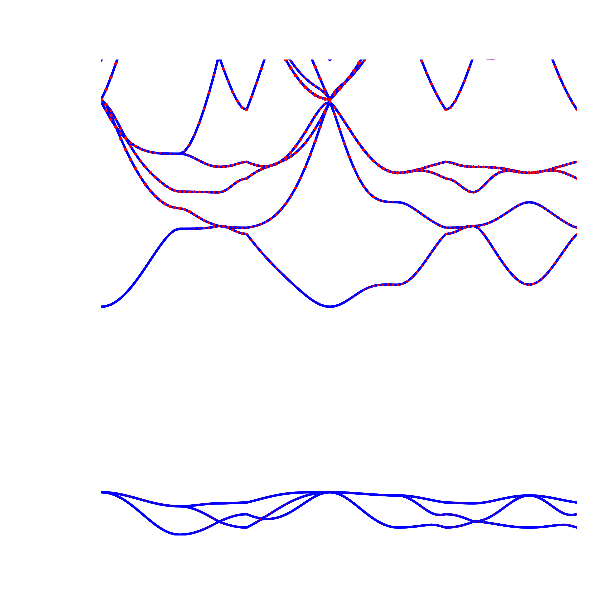 Espectros Ópticos: LiF - excitones
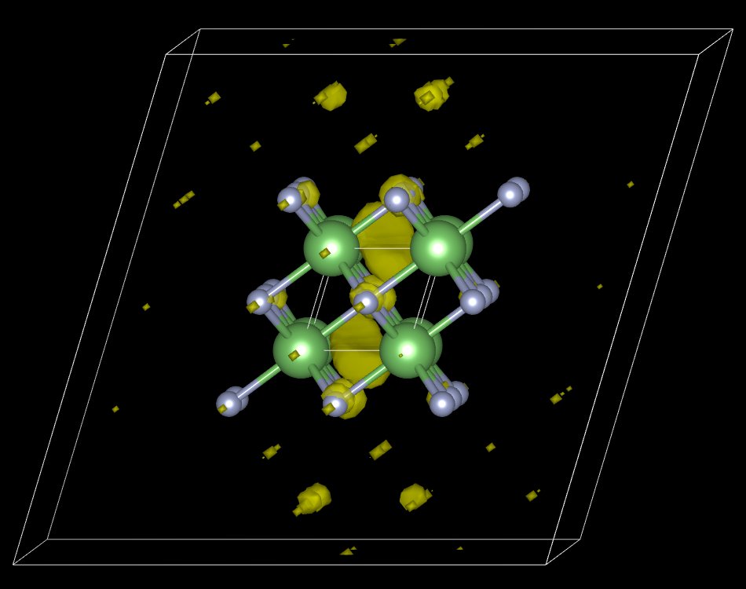
 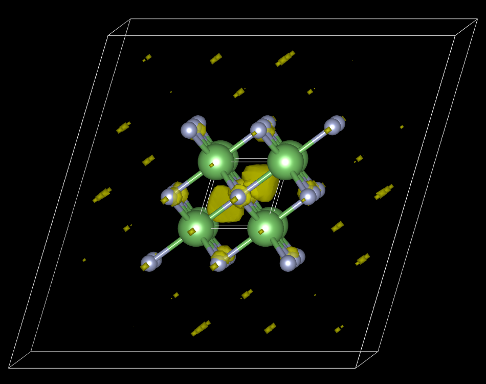
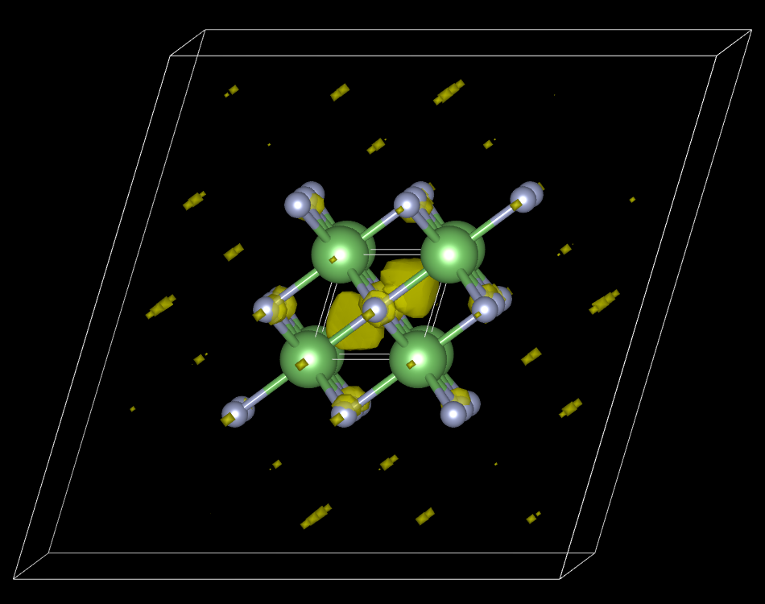
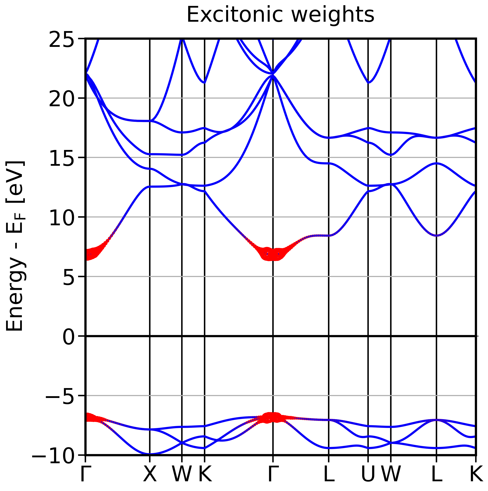

XANES: Espectros de absorción de rayos-X cerca del borde
LiF
Li-\(K\)
F-\(K\)
MgO
Mg-\(K\)
O-\(K\)
Mg-\(L_{23}\)
CaO
Ca-\(K\)
O-\(K\)
Ca-\(L_{23}\)
ZnO
Zn-\(K\)
O-\(K\)
Zn-\(L_{23}\)

Espectros XANES: MgO

Espectros XANES: MgO


Espectros XANES: CaO

Estructura Electrónica: LiF - Li vacante

Estructura Electrónica: LiF - F vacante

Estructura Electrónica: LiF - dopante Na


Estructura Electrónica: LiF - dopante Mg

Defectos: LiF - Estructura Electrónica (KS)